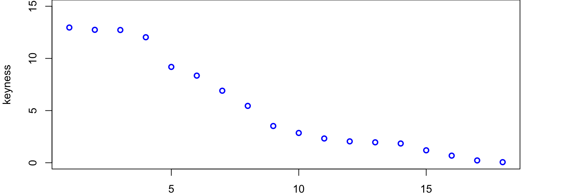
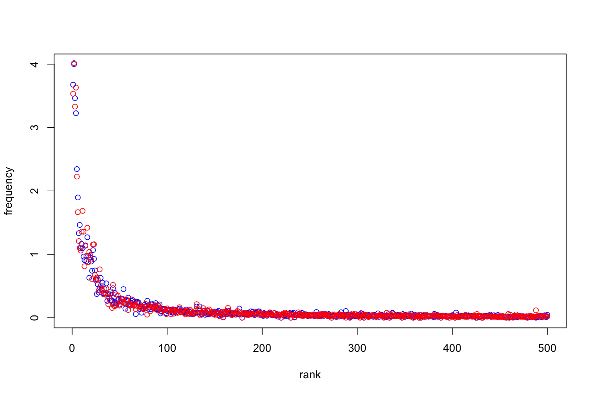
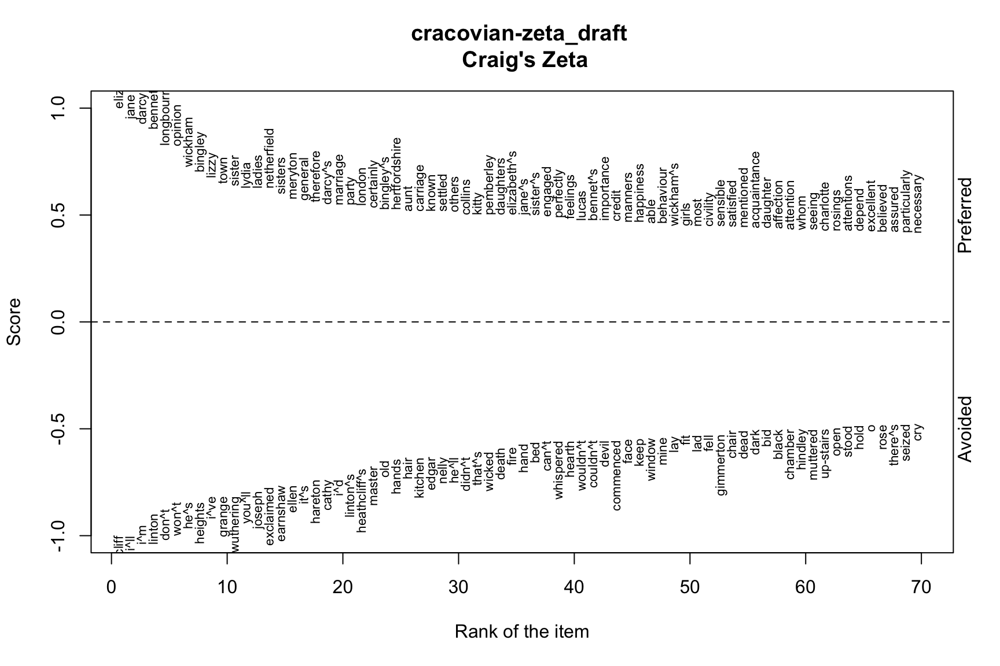
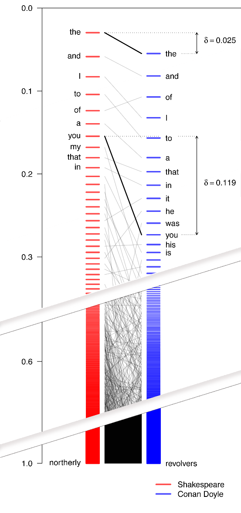
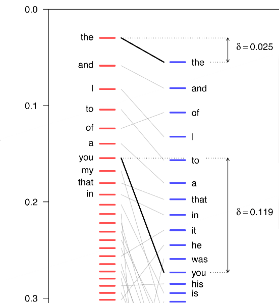

Different methods of extracting keywords from texts A comparison
Maciej Eder
Institute of Polish Language (Polish Academy of Sciences)
Maciej Eder (Polish Academy of Sciences, Krakow)
Different methods of extracting keywords from texts A comparison
Maciej Eder
Institute of Polish Language (Polish Academy of Sciences)
I have just returned from a visit to my landlord – the solitary neighbour that I shall be troubled with.
neighbour solitary troubled landlord visit returned just shall from I have be with my that a to the

heathcliff, linton, catherine, hareton, earnshaw, cathy, edgar, ellen, heights, hindley, nelly, ll, grange, i, wuthering, t, joseph, isabella, master, gimmerton, zillah, m, exclaimed, he, thrushcross, and, answered, yah, kenneth, ve, maister, lockwood, kitchen, you, dean, moors, replied, cried, him, muttered, lintons, papa, she, till, commenced, on, wer, ech, shoo, leant, hearth, bonny, door, stairs, hell, me, crags, moor, wouldn, fiend, settle, jabez, penistone, fire, ye, its, bid, nowt, naught, yer, hush, mistress, grew, lad, compelled, minny, won, hisseln, skulker, soa, wisht, cousin, lattice, didn, yon, minute, lass, needn, inquired, snow, branderham, flaysome, gooid, sud, thear, affirming, interrupted, couldn, window, …, …, …, a, in, the


| the | and | to | i | of | … |
|---|---|---|---|---|---|
| 3.557 | 2.938 | 3.398 | 1.696 | 2.965 | … |
| 3.919 | 4.068 | 2.988 | 3.078 | 1.905 | … |
the difference between the values:
| the | and | to | i | of | … |
|---|---|---|---|---|---|
| -0.362 | -1.130 | 0.410 | -1.382 | 1.059 | … |
## [1] "of" "was" "her" "elizabeth" "to"
## [6] "be" "mr" "had" "not" "darcy"
## [11] "she" "very" "which" "in" "all"
## [16] "that" "they" "bennet" "their" "but"
## [21] "been" "such" "jane" "bingley" "could"
## [26] "much" "am" "so" "with" "mrs"
## [31] "as" "were" "them" "have" "for"
## [36] "is" "by" "sister" "it" "wickham"
## [41] "what" "will" "collins" "herself" "most"
## [46] "miss" "soon" "this" "lydia" "who"
## [51] "any" "dear" "family" "lady" "every"
## [56] "must" "know" "without" "though" "more"
## [61] "letter" "lizzy" "other" "think" "longbourn"
## [66] "many" "good" "gardiner" "mother" "do"
## [71] "no" "may" "great" "hope" "well"
## [76] "than" "ladies" "sisters" "time" "netherfield"
## [81] "manner" "friend" "can" "aunt" "kitty"
## [86] "charlotte" "feelings" "daughter" "before" "however"
## [91] "opinion" "colonel" "lucas" "whom" "marriage"
## [96] "always" "might" "nothing" "indeed" "happiness"## [1] "elizabeth" "darcy" "bennet" "jane"
## [5] "bingley" "of" "wickham" "collins"
## [9] "very" "mr" "lydia" "which"
## [13] "such" "sister" "was" "their"
## [17] "lizzy" "much" "am" "longbourn"
## [21] "be" "all" "gardiner" "had"
## [25] "been" "most" "ladies" "netherfield"
## [29] "they" "kitty" "her" "charlotte"
## [33] "colonel" "lucas" "mrs" "sisters"
## [37] "dear" "family" "not" "herself"
## [41] "meryton" "opinion" "marriage" "pemberley"
## [45] "letter" "soon" "daughters" "aunt"
## [49] "bingley^s" "rosings" "town" "could"
## [53] "darcy^s" "lady" "party" "hertfordshire"
## [57] "daughter" "them" "de" "william"
## [61] "girls" "miss" "elizabeth^s" "forster"
## [65] "lydia^s" "happiness" "without" "many"
## [69] "bourgh" "mother" "so" "every"
## [73] "but" "gentlemen" "general" "known"
## [77] "feelings" "she" "therefore" "sister^s"
## [81] "london" "hurst" "wickham^s" "officers"
## [85] "fitzwilliam" "were" "whom" "manner"
## [89] "ladyship" "bennet^s" "civility" "friend"
## [93] "ball" "mary" "jane^s" "hope"
## [97] "certainly" "will" "any" "that"

\[\zeta_{(a,b)} = \left(\frac{f_{(a)} - f_{(b)}}{100}\right) +1\]
(Burrows, 2007; Craig, 2009)

## [1] "elizabeth" "jane" "darcy" "bennet"
## [5] "longbourn" "opinion" "wickham" "bingley"
## [9] "lizzy" "town" "sister" "lydia"
## [13] "ladies" "netherfield" "sisters" "meryton"
## [17] "general" "therefore" "darcy^s" "marriage"
## [21] "party" "london" "certainly" "bingley^s"
## [25] "hertfordshire" "aunt" "carriage" "known"
## [29] "settled" "others" "collins" "kitty"
## [33] "pemberley" "daughters" "elizabeth^s" "jane^s"
## [37] "sister^s" "engaged" "perfectly" "feelings"
## [41] "lucas" "bennet^s" "importance" "credit"
## [45] "manners" "happiness" "able" "behaviour"
## [49] "wickham^s" "girls" "most" "civility"
## [53] "sensible" "satisfied" "mentioned" "acquaintance"
## [57] "daughter" "affection" "attention" "whom"
## [61] "seeing" "charlotte" "rosings" "attentions"
## [65] "depend" "excellent" "believed" "assured"
## [69] "particularly" "necessary" "regard" "likely"
## [73] "conversation" "colonel" "many" "added"
## [77] "praise" "understanding" "mary" "highly"
## [81] "anyone" "address" "concern" "fortune"
## [85] "assure" "agreeable" "honour" "consequence"
## [89] "given" "possible" "mother" "gardiner"
## [93] "de" "lydia^s" "bourgh" "gentlemen"
## [97] "pleasing" "eldest" "particulars" "subject"## [1] "heathcliff" "i^ll" "i^m" "linton"
## [5] "don^t" "won^t" "he^s" "heights"
## [9] "i^ve" "grange" "wuthering" "you^ll"
## [13] "joseph" "exclaimed" "earnshaw" "ellen"
## [17] "it^s" "hareton" "cathy" "i^d"
## [21] "linton^s" "heathcliff^s" "master" "old"
## [25] "hands" "hair" "kitchen" "edgar"
## [29] "nelly" "he^ll" "didn^t" "that^s"
## [33] "wicked" "death" "fire" "hand"
## [37] "bed" "can^t" "whispered" "hearth"
## [41] "wouldn^t" "couldn^t" "devil" "commenced"
## [45] "face" "keep" "window" "mine"
## [49] "lay" "fit" "lad" "fell"
## [53] "gimmerton" "chair" "dead" "dark"
## [57] "bid" "black" "chamber" "hindley"
## [61] "muttered" "up-stairs" "open" "stood"
## [65] "hold" "o" "rose" "there^s"
## [69] "seized" "cry" "she^s" "arms"
## [73] "thrushcross" "floor" "demanded" "tears"
## [77] "clock" "boy" "arm" "answered"
## [81] "door" "lie" "remarked" "mouth"
## [85] "isabella" "dean" "candle" "blood"
## [89] "neck" "cheek" "you^d" "darling"
## [93] "head" "round" "sit" "child"
## [97] "minute" "mistress" "show" "laid"\[ TFIDF_{w} = f_{w} \times \log \frac{N}{n_{t}} \]
## [1] "darcy" "bennet" "bingley" "elizabeth"
## [5] "wickham" "collins" "lydia" "longbourn"
## [9] "gardiner" "netherfield" "lucas" "lizzy"
## [13] "meryton" "pemberley" "bingley^s" "rosings"
## [17] "kitty" "darcy^s" "hertfordshire" "elizabeth^s"
## [21] "forster" "lydia^s" "bourgh" "wickham^s"
## [25] "fitzwilliam" "jane" "catherine" "bennet^s"
## [29] "phillips" "hunsford" "brighton" "collins^s"
## [33] "derbyshire" "hurst" "charlotte" "colonel"
## [37] "officers" "william" "kent" "lucases"
## [41] "gardiner^s" "denny" "charlotte^s" "ladyship"
## [45] "judgement" "catherine^s" "de" "jane^s"
## [49] "bennets" "lambton" "reynolds" "maria"
## [53] "gracechurch" "etc" "anyone" "ladyship^s"
## [57] "eliza" "jenkinson" "parsonage" "elopement"
## [61] "behaviour" "georgiana" "gardiners" "entail"
## [65] "caroline" "regiment" "bingleys" "collinses"
## [69] "enumerating" "fitzwilliam^s" "lucas^s" "phillips^s"
## [73] "cousin" "saturday" "shire" "militia"
## [77] "corps" "james^s" "lakes" "bourgh^s"
## [81] "clapham" "fishing" "newcastle" "younge"
## [85] "ladies" "niece" "exposing" "felicity"
## [89] "imprudence" "uncommonly" "assembly" "wednesday"
## [93] "nieces" "engagements" "louisa" "twelvemonth"
## [97] "gratifying" "william^s" "annesley" "caroline^s"
| word | count | word | count |
|---|---|---|---|
| the | 27595 | the | 28662 |
| and | 26735 | and | 14109 |
| I | 22538 | of | 13229 |
| … | … | … | … |
| northerly | 1 | revolvers | 1 |
\[P_{r(x)} = \frac{1}{N}\sum_{i=1}^{r(x)}f(i)\]
which also guarantees that the values are scaled to fall into the range {0, 1}.
a simpler and more elegant version of the above:
\[P_{r(x)} = \left( \frac{1}{N}\sum_{i=1}^{r(x)}f(x_{i}) \right) - f(x)\]
which is of course equal to:
\[P_{r(x)} = \frac{1}{N}\sum_{i=1}^{r(x-1)}f(x_{i})\]


Having normalized the frequencies/positions of the words, one can easily compute the distance between the same word between two sets (texts or subcorpora), say A and B, by simply estimating their difference. This can be defined as
\[\delta_{x,AB} = \| P_{r(x),A} - P_{r(x),B} \|\]
The above geometric interpretation can be also solved algebraically. In this interpretation, the position \(P_{r(x)}\) of a given word is simply a cumulative sum of frequencies of all the preceding words.
## [1] "elizabeth" "darcy" "bennet" "jane"
## [5] "bingley" "wickham" "collins" "lydia"
## [9] "lizzy" "longbourn" "gardiner" "ladies"
## [13] "netherfield" "kitty" "charlotte" "colonel"
## [17] "lucas" "sisters" "meryton" "pemberley"
## [21] "daughters" "bingley^s" "rosings" "opinion"
## [25] "darcy^s" "marriage" "hertfordshire" "de"
## [29] "william" "elizabeth^s" "forster" "lydia^s"
## [33] "girls" "bourgh" "town" "sister^s"
## [37] "gentlemen" "sister" "hurst" "wickham^s"
## [41] "fitzwilliam" "officers" "ladyship" "bennet^s"
## [45] "party" "jane^s" "attentions" "phillips"
## [49] "ball" "hunsford" "brighton" "collins^s"
## [53] "derbyshire" "mary" "aunt" "importance"
## [57] "depend" "eliza" "pleasing" "eldest"
## [61] "general" "match" "particulars" "understanding"
## [65] "civility" "compliment" "praise" "niece"
## [69] "regiment" "concerned" "connections" "felicity"
## [73] "maria" "charlotte^s" "known" "parsonage"
## [77] "saturday" "street" "highly" "dearest"
## [81] "daughter" "london" "scheme" "favour"
## [85] "happiness" "dancing" "fortune" "engagement"
## [89] "prevailed" "resentment" "caroline" "relations"
## [93] "partner" "kent" "pounds" "lucases"
## [97] "occurred" "excellent" "etc" "gardiner^s"## freqs zeta tfidf cracovian
## [1,] "of" "elizabeth" "darcy" "elizabeth"
## [2,] "was" "jane" "bennet" "darcy"
## [3,] "her" "darcy" "bingley" "bennet"
## [4,] "elizabeth" "bennet" "elizabeth" "jane"
## [5,] "to" "longbourn" "wickham" "bingley"
## [6,] "be" "opinion" "collins" "wickham"
## [7,] "mr" "wickham" "lydia" "collins"
## [8,] "had" "bingley" "longbourn" "lydia"
## [9,] "not" "lizzy" "gardiner" "lizzy"
## [10,] "darcy" "town" "netherfield" "longbourn"
## [11,] "she" "sister" "lucas" "gardiner"
## [12,] "very" "lydia" "lizzy" "ladies"
## [13,] "which" "ladies" "meryton" "netherfield"
## [14,] "in" "netherfield" "pemberley" "kitty"
## [15,] "all" "sisters" "bingley^s" "charlotte"
## [16,] "that" "meryton" "rosings" "colonel"
## [17,] "they" "general" "kitty" "lucas"
## [18,] "bennet" "therefore" "darcy^s" "sisters"
## [19,] "their" "darcy^s" "hertfordshire" "meryton"
## [20,] "but" "marriage" "elizabeth^s" "pemberley"
## [21,] "been" "party" "forster" "daughters"
## [22,] "such" "london" "lydia^s" "bingley^s"
## [23,] "jane" "certainly" "bourgh" "rosings"
## [24,] "bingley" "bingley^s" "wickham^s" "opinion"
## [25,] "could" "hertfordshire" "fitzwilliam" "darcy^s"
## [26,] "much" "aunt" "jane" "marriage"
## [27,] "am" "carriage" "catherine" "hertfordshire"
## [28,] "so" "known" "bennet^s" "de"
## [29,] "with" "settled" "phillips" "william"
## [30,] "mrs" "others" "hunsford" "elizabeth^s"
## [31,] "as" "collins" "brighton" "forster"
## [32,] "were" "kitty" "collins^s" "lydia^s"
## [33,] "them" "pemberley" "derbyshire" "girls"
## [34,] "have" "daughters" "hurst" "bourgh"
## [35,] "for" "elizabeth^s" "charlotte" "town"
## [36,] "is" "jane^s" "colonel" "sister^s"
## [37,] "by" "sister^s" "officers" "gentlemen"
## [38,] "sister" "engaged" "william" "sister"
## [39,] "it" "perfectly" "kent" "hurst"
## [40,] "wickham" "feelings" "lucases" "wickham^s"
## [41,] "what" "lucas" "gardiner^s" "fitzwilliam"
## [42,] "will" "bennet^s" "denny" "officers"
## [43,] "collins" "importance" "charlotte^s" "ladyship"
## [44,] "herself" "credit" "ladyship" "bennet^s"
## [45,] "most" "manners" "judgement" "party"
## [46,] "miss" "happiness" "catherine^s" "jane^s"
## [47,] "soon" "able" "de" "attentions"
## [48,] "this" "behaviour" "jane^s" "phillips"
## [49,] "lydia" "wickham^s" "bennets" "ball"
## [50,] "who" "girls" "lambton" "hunsford"
## [51,] "any" "most" "reynolds" "brighton"
## [52,] "dear" "civility" "maria" "collins^s"
## [53,] "family" "sensible" "gracechurch" "derbyshire"
## [54,] "lady" "satisfied" "etc" "mary"
## [55,] "every" "mentioned" "anyone" "aunt"
## [56,] "must" "acquaintance" "ladyship^s" "importance"
## [57,] "know" "daughter" "eliza" "depend"
## [58,] "without" "affection" "jenkinson" "eliza"
## [59,] "though" "attention" "parsonage" "pleasing"
## [60,] "more" "whom" "elopement" "eldest"
## [61,] "letter" "seeing" "behaviour" "general"
## [62,] "lizzy" "charlotte" "georgiana" "match"
## [63,] "other" "rosings" "gardiners" "particulars"
## [64,] "think" "attentions" "entail" "understanding"
## [65,] "longbourn" "depend" "caroline" "civility"
## [66,] "many" "excellent" "regiment" "compliment"
## [67,] "good" "believed" "bingleys" "praise"
## [68,] "gardiner" "assured" "collinses" "niece"
## [69,] "mother" "particularly" "enumerating" "regiment"
## [70,] "do" "necessary" "fitzwilliam^s" "concerned"
## [71,] "no" "regard" "lucas^s" "connections"
## [72,] "may" "likely" "phillips^s" "felicity"
## [73,] "great" "conversation" "cousin" "maria"
## [74,] "hope" "colonel" "saturday" "charlotte^s"
## [75,] "well" "many" "shire" "known"
## [76,] "than" "added" "militia" "parsonage"
## [77,] "ladies" "praise" "corps" "saturday"
## [78,] "sisters" "understanding" "james^s" "street"
## [79,] "time" "mary" "lakes" "highly"
## [80,] "netherfield" "highly" "bourgh^s" "dearest"
## [81,] "manner" "anyone" "clapham" "daughter"
## [82,] "friend" "address" "fishing" "london"
## [83,] "can" "concern" "newcastle" "scheme"
## [84,] "aunt" "fortune" "younge" "favour"
## [85,] "kitty" "assure" "ladies" "happiness"
## [86,] "charlotte" "agreeable" "niece" "dancing"
## [87,] "feelings" "honour" "exposing" "fortune"
## [88,] "daughter" "consequence" "felicity" "engagement"
## [89,] "before" "given" "imprudence" "prevailed"
## [90,] "however" "possible" "uncommonly" "resentment"
## [91,] "opinion" "mother" "assembly" "caroline"
## [92,] "colonel" "gardiner" "wednesday" "relations"
## [93,] "lucas" "de" "nieces" "partner"
## [94,] "whom" "lydia^s" "engagements" "kent"
## [95,] "marriage" "bourgh" "louisa" "pounds"
## [96,] "always" "gentlemen" "twelvemonth" "lucases"
## [97,] "might" "pleasing" "gratifying" "occurred"
## [98,] "nothing" "eldest" "william^s" "excellent"
## [99,] "indeed" "particulars" "annesley" "etc"
## [100,] "happiness" "subject" "caroline^s" "gardiner^s"## [1] "maggie" "adam" "lydgate" "dorothea" "emma"
## [6] "lucy" "hetty" "elinor" "tulliver" "jane"
## [11] "elizabeth" "casaubon" "bulstrode" "rosamond" "marianne"
## [16] "weston" "fred" "dinah" "catherine" "heathcliff"
## [21] "was" "darcy" "tom" "poyser" "harriet"
## [26] "philip" "felt" "seemed" "knightley" "brooke"
## [31] "its" "fairfax" "linton" "glegg" "elton"## [1] "upon" "lady" "thou" "lovelace" "jones"
## [6] "phineas" "my" "pen" "lord" "dear"
## [11] "sir" "major" "letter" "howe" "laura"
## [16] "harlowe" "honour" "madam" "duke" "george"
## [21] "that" "belford" "crawley" "pendennis" "sophia"
## [26] "clarissa" "lopez" "micawber" "pamela" "b"
## [31] "finn" "so" "peggotty" "your" "captain"## [1] "maggie" "lydgate" "adam" "dorothea" "hetty"
## [6] "lucy" "elinor" "tulliver" "casaubon" "rosamond"
## [11] "bulstrode" "marianne" "weston" "emma" "dinah"
## [16] "elizabeth" "heathcliff" "darcy" "poyser" "catherine"
## [21] "fred" "knightley" "brooke" "philip" "fairfax"
## [26] "glegg" "elton" "linton" "graham" "bennet"
## [31] "seth" "garth" "harriet" "middlemarch" "ladislaw"## [1] "lovelace" "phineas" "jones" "major" "howe"
## [6] "harlowe" "belford" "crawley" "pendennis" "clarissa"
## [11] "lopez" "micawber" "sophia" "pamela" "laura"
## [16] "finn" "peggotty" "duke" "allworthy" "thou"
## [21] "amelia" "clavering" "osborne" "copperfield" "pen"
## [26] "wharton" "traddles" "bounderby" "dobbin" "rawdon"
## [31] "solmes" "b" "jarndyce" "dora" "eleanor"## [1] "felt" "feelings" "feel" "feeling" "tone"
## [6] "seemed" "sense" "rose" "chapter" "quiet"
## [11] "oh" "minutes" "cold" "glance" "yes"
## [16] "deep" "entered" "silence" "looked" "added"
## [21] "its" "smile" "turned" "something" "seated"
## [26] "scarcely" "speaking" "suddenly" "longer" "strong"
## [31] "i^ve" "paused" "towards" "continued"## [1] "honour" "lord" "favour" "although" "friend"
## [6] "lady" "dear" "letter" "upon" "dearest"
## [11] "honest" "gentleman" "lovelace" "occasion" "sir"
## [16] "sex" "letters" "london" "harlowe" "worthy"
## [21] "whom" "story" "therefore" "pen" "thou"
## [26] "madam" "creature" "tis" "wretch" "beloved"
## [31] "clarissa" "howe" "written" "write"